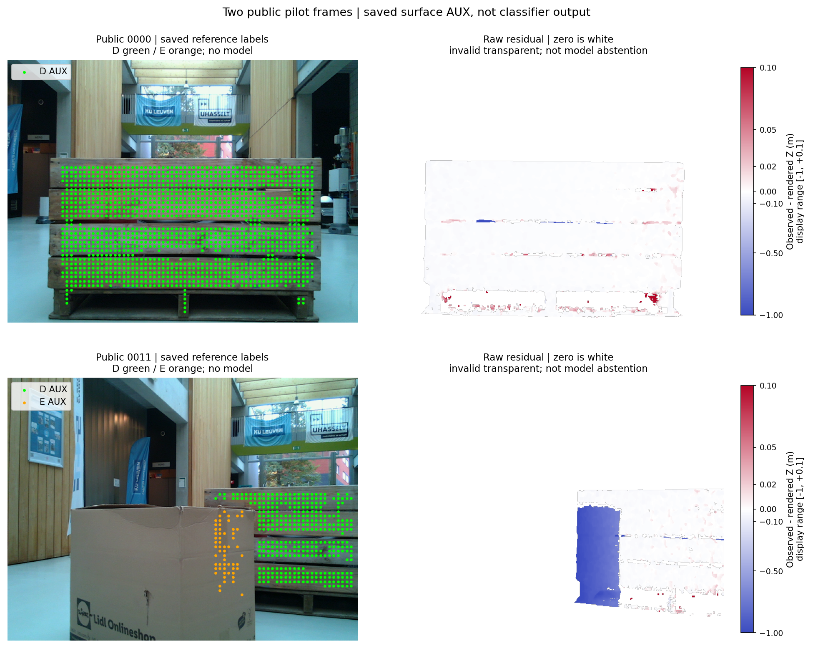
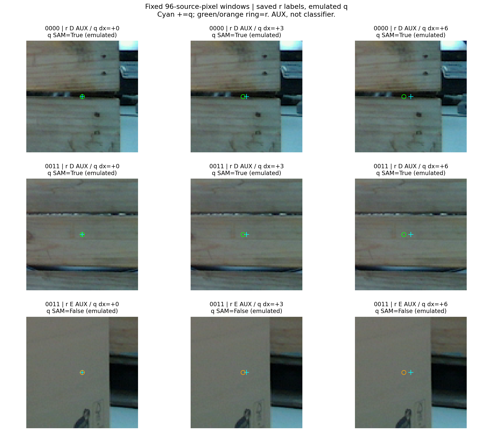

새 모델 학습·추론 0회. 독립 영상 2장으로 만든 보조 라벨이며 현재 pallet native gold·모델 정확도는 아직 입증하지 않았습니다. 현재 평가 데이터·PnP 변경 없이 진행했습니다.
보이는 목재의 관측−렌더 깊이 중앙값은 약 −12mm, 종이상자가 가리는 영역은 약 −857mm였습니다. T와 inverse(T)를 보존하고 pose 보정은 하지 않았습니다. 깊이·SAM·안정된 11×11 창을 함께 확인한 부분만 D/E 후보로 남겼습니다.
| 공개 frame | 고정 격자 | D 후보 | E 후보 | U·제외 |
|---|---|---|---|---|
| 0000 | 4800 | 1434 | 0 | 3366 |
| 0011 | 4800 | 352 | 57 | 4391 |
E 57개는 교사점 수입니다. U는 물체 밖·깊이 결측·경계 등을 포함하며 모델의 보류율로 세지 않습니다. 모든 r 9600개와 emulated q 86400개를 별도 checker로 검산했습니다.

cyan은 emulated q, ring은 참조 r입니다. 아래 96 source-pixel 창은 교사 후보의 관찰이며 classifier 입력이나 예측 결과로 주장하지 않습니다. 안전한 내부점의 결과로 경계·가상 코너 문제까지 해결됐다고 판단하지 않습니다.

정의·수치·한계·다음 단계 · 독립 원장 QA · 공개 가상주소 8개 전체 crop · 현재 1186 입력 CODE 감사
자료: Yanming Wu·Eric Demeester, KU Leuven Pallox, CC BY4.0. 전체 source·원장·수정 전후·코드 hash는 package MANIFEST에 있습니다.